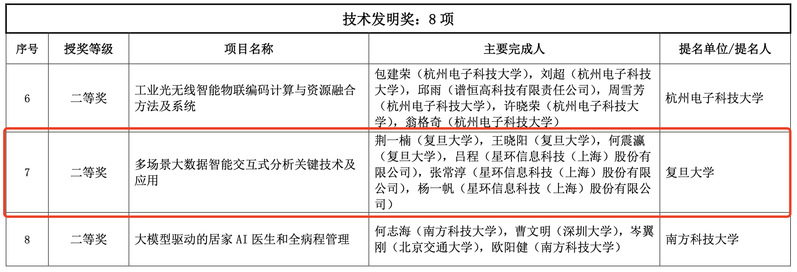
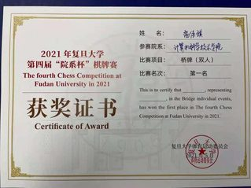
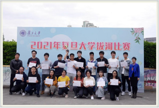
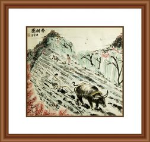
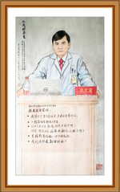
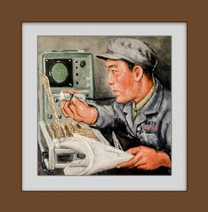

学生内部网
教师内部网
查看日志
导航
学院概况
学院简介
组织架构
教工之家
职能部门
历史沿革
师资队伍
在职教师
按职称
按拼音
人才计划
国家杰出青年科学基金...
973 首席科学家（青年...
国家自然科学基金优秀...
教育部新世纪优秀人才...
上海市领军人才
上海市优秀学术带头人...
上海市青年拔尖人才计...
上海市曙光计划
上海市晨光计划
上海市启明星计划
上海市浦江人才计划
上海市扬帆计划
兼职客座
退休教师
B
C
D
F
G
H
J
K
L
M
N
P
Q
S
T
W
X
Y
Z
人才培养
本科生教学
教学动态
专业介绍
培养方案
常用文档
研究生教学
教学动态
招生信息
培养方案
课程建设
学位申请
非全专硕
教学成果
精品课程
一流课程
教学成果奖
课程思政
工作动态
建设成果
机构设置
相关文档
科学研究
科研快讯
科研机构
省部级科研平台
校级科研平台
学科方向
科研成果
国家级奖项
省部级奖项
学生工作
学生活动
通知公告
党建思政
二十大专栏
理论学习
不忘初心 牢记使命
经典文献
政策法规
党建动态
工青妇建
工会活动
青年联谊
妇女风采
退休园地
退休动态
退休党建
退休风采
对外交流
交流动态
海外交流
合作高校
学生交流
教师交流
校友中心
院友会
活动纪实
院友风采
理事会
章程
发展基金
新闻动态
基金项目
捐赠指南
捐赠鸣谢
新闻速递
更多

复旦大学计算机科学技术学院荆一楠、王晓阳、何震瀛荣获 2024年度“吴文俊人工智能科学技术奖”技术发明奖二等奖
2025年2月20日，中国人工智能学会正式公布2024年度吴文俊人工智能科学技术奖获奖名单。复旦大学计算机科学技术学院荆一楠副教授、王晓阳教授、何震瀛教授等牵头，与星环信息科技（上海）股份有限公司联合申报的“多场景大数据智能交互式分析关键技术及应用”荣获技术发明奖二等奖。吴文俊人工智能科学技术奖被誉为“中国智能科学技术最高奖”，于2011年起设立，每年评选一次，旨在通过奖励机制表彰在我国智能科学技术领域取得重大科技突破、贡献卓著的先进代表人物和组织，充分调动我国智能科学技术工作者的积极性和创造性。（完整获奖名单详见中国人工智能学会发布的“2024年度吴文俊人工智能科学技术奖奖励公告”）荆一楠副教授 王晓阳教授 何震瀛教授“多场景大数据智能交互式分析关键技术及应用”面向数字化转型中的智能数据分析需求，针对大数据分析系统的易用性和时效性问题，通过结合人工智能和大数据技术，突破AI增强的智能数据交互式分析技术、智能数据分析中的文本数据挖掘与联邦学习技术、面向低延迟交互式分析的查询优化技术等关键技术。“多场景大数据智能交互式分析关键技术及应用”的出现，使得通用的大数据分析产品具备了在给定的行业
计算机学院成功举办2025年退休教职工辞旧迎新茶话会
2024-12-26
计算机科学技术学院成功举办2024年复旦大学程序设计竞赛
2024-12-16
祝贺！复旦大学计算机科学技术学院科研团队荣获高交会2项优秀科研成果创新奖
2024-12-02
重要通知
更多
复旦大学2025年信息学学科冬令营 报名通知
2024-12-23
复旦大学计算机科学技术学院2025年博士研究生招生“申请-考核”制选拔办法
2024-11-30
2023-2024学年计算机科学技术学院 社会冠名奖学金拟获得者公示
2024-11-08
复旦大学计算机学院2023-2024学年 国家奖学金和上海市奖学金获奖名单公示
2024-11-06
复旦大学计算机科学技术学院2025年推免生 招生选拔（第二轮）工作通知
2024-10-01
2025届本科推免生计算机科学技术学院、软件学院拟推荐（含候补推荐）名单
2024-09-19
学生活动
更多
同心协力，顽强“乒”搏 | 我院乒乓球队获2022年复旦大学“院系杯”团体赛冠军
09-30
计算机学院召开学生发展对象座谈会
11-22
师说心语｜彭鑫老师专访
07-30
心栖梦归处，再见仍少年｜计算机科学技术学院、软件学院2020届、2021届春季毕业生返校活动暨毕业典礼圆满举行
07-15
师说心语｜赵卫东老师专访
06-16
师说心语 | 金玲飞老师：不忘初心，不负韶华
06-15
讲座信息
更多
11.19 | AI Networking for Remote CV: A Use Case in Subway E-Ticketing
2024-11-19
08.16｜Symmetric Exponential Time Requires Near-Maximum Circuit Size
2024-08-12
07.03 | 时间约束的极早检测 Early Detection of Temporal Constraint Violations
2024-07-01
01.04 | Deep Neural Networks for Big Data Analytics in CPSS
2024-01-01
12.12 | 计算机科学技术学院党委教工党支部联合主题党日活动——学科研究与发展探讨系列讲座第二期
2023-12-11
12.12 | AI and Smart Sensors for Ubiquitous Healthcare: Challenges and Opportunities 加拿大皇家科学院院士、中国科学院外籍院士Jamal Deen教授谈人工智能、智慧感知与健康的挑战与未来
2023-12-11
招聘信息
更多
NEW！复旦大学上海市智能信息处理重点实验室主任招聘公告
2022-12-06
NEW！ 2022年复旦大学光华青年学者论坛—计算机科学技术分论坛 诚邀海内外英才
2022-11-28
NEW！复旦大学上海市数据科学重点实验室主任招聘公告
2022-10-05
HOT! 上海人工智能实验室—复旦大学全球联合招募 | 计算机科学技术学院
2021-12-21
2021年复旦大学光华青年学者论坛—计算机科学技术分论坛·诚邀海内外英才
2021-11-18
复旦大学计算机科学技术学院诚聘海内外优秀人才
2021-07-30
2020 年复旦大学光华青年学者论坛—计算机科学技术分论坛 诚邀海内外英才
2020-12-04
采购公告
更多
图片新闻
更多

高佳琪同学获得 2021 年复旦大学第四届 “院系杯” 棋牌赛桥牌（双人）第一名

2021 年复旦大学拔河比赛于 4 月 20 日圆满落下帷幕，计算机学院获得研究生组季军！

于建华老师线上书画展·（十）牛
于建华老师线上书画展·（九）马
于建华老师线上书画展·（八）书法作品

于建华老师线上书画展·（七）战疫书画
于建华老师线上书画展·（六）山水画

于建华老师线上书画展·（五）人物画
于建华老师线上书画展·（四）卡纸画
于建华老师线上书画展·（三）花鸟画
整站下载